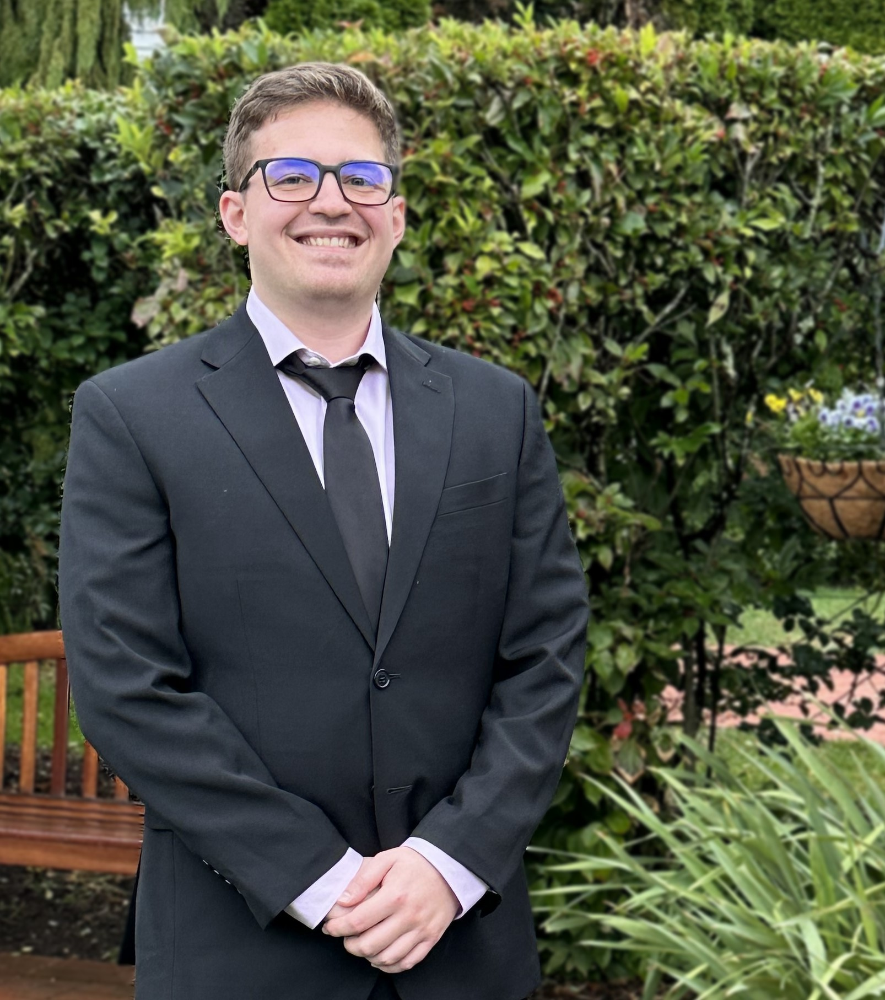

Jack Stogoski

PROFILE
An experienced software engineer specializing in Python and Java software development.
A strong history of coordinating with on and off-shore teams throughout development cycles.
Applies a detail-oriented software approach to ensure top quality deliverables.
WORK HISTORY
General Motors - SDV Ultifi Platform Software Developer
VA (Remote) : June 2023 - Present
- Member of an agile team responsible for the development of Ultifi in-vehicle services
General Motors - TRACK Engineering Rotation Program
Warren, MI : June 2021 - June 2023
- Gain in-depth industry knowledge through four rotations in various technical areas
- Software Engineer - Ultifi Emulation
- Develop and test OTA and mock vehicle services through the use of BDD Framework/Gherkin
- Data Analyst - SQL
- Provide meaninful data visualization to customers via SQL and MS PowerBI
- Domain Lead - Audio, AR, Nav. Systems
- Coordinated resolution of 100+ audio software defects with a global team over a 6-month period
- Software Developer - Big Data
- Enhance data ingestion/persistence capabilities for GM vehicles
General Motors - Data Analyst Intern
VA (Remote) : May 2020 - August 2020
- Optimize and autonomize the engineering processes of internal customers through SQL queries and PowerBI data visualization tools
JLG Industries - Electrical Controls Intern
Hagerstown, MD : June 2019 - August 2019
- Work with radio communication chips to develop a POC wireless aerial work platform
SKILLS & CERTIFICATIONS
- Languages: Java, Python, C/C++, SQL
- Gherkin/BDD Framework
- CI/CD Pipeline
- Source Control (Git, Gerrit, Jira, TFS)
- Quality Assurance Testing
- Certified SAFe 6 Practitioner
EDUCATION
Virgina Polytechnic Institute and State University (Virginia Tech)
The Bradley Department of Electrical and Computer Engineering
Blacksburg, VA : 2017-2021
B.S. in Computer Engineering (Software Systems), Minor in Computer Science
OTHER